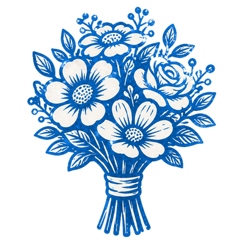
Emily, The Bride
Each night, choose a player. You learn if they are a Townsfolk. Either the Bride or the Groom is drunk while both are alive. [+1 Groom]
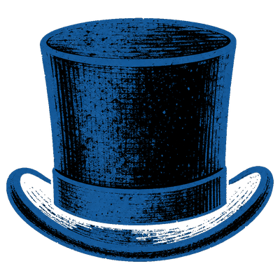
Oskar, The Groom
Each night, choose 2 players. You learn if at least one of them is a Minion. Either the Groom or the Bride is drunk while both are alive. [+1 Bride]
Virgin
The 1st time you are nominated, if the nominator is a Townsfolk, they are executed immediately.
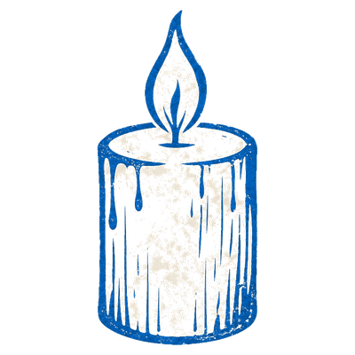
Priest
On the 3rd night, you learn 2 Demons, at least 1 of which is in play.
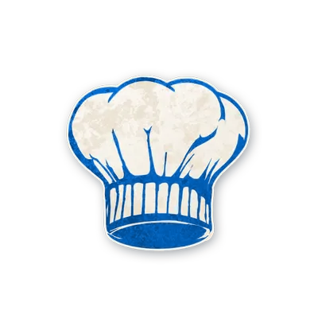
Chef
You start knowing how many pairs of evil players there are.
Grandmother
You start knowing a good player & their character. If the Demon kills them, you die too.
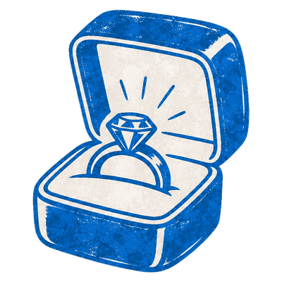
Best Man
Each night, choose 2 players: you learn if they are the same alignment. There is a good player who registers as evil to you.
Maid of Honor
You start knowing an in-play Outsider (or that none are in play) and an in-play Minion (or that none are in play).
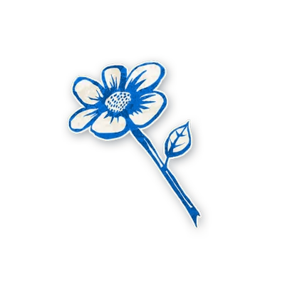
Flowergirl
Each night*, you learn if a Demon voted today.
Photographer
On day, publicly choose 5 players. That night, you learn how many were Outsiders.
Cannibal
You have the ability of the recently killed executee. If they are evil, you are poisoned until a good player dies by execution.
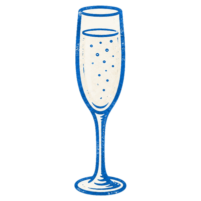
Toastmaster
Once per game, publicly give a toast. Neither the Bride nor the Groom can die before tomorrow.
Gossip
Each day, you may make a public statement. Tonight, if it was true, a player dies.
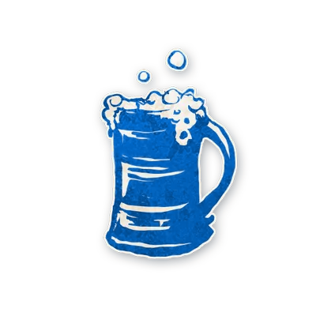
Drunk
You do not know you are the Drunk. You think you are a Townsfolk character, but you are not.
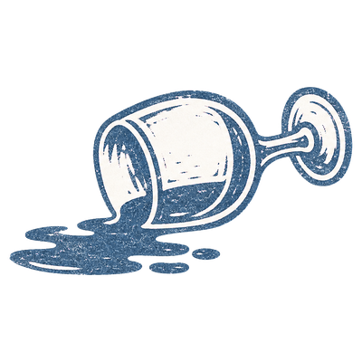
Weird Uncle
1 of your Townsfolk neighbors is poisoned. If you are executed, one of your Townsfolk neighbors may die tonight.
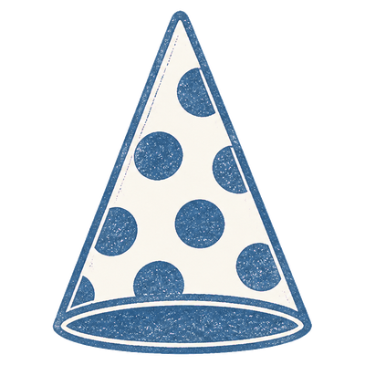
Wedding Crasher
Each night, choose an alive player. If they are a Townsfolk, they are drunk until dusk.
Klutz
When you learn that you died, publicly choose 1 alive player: if they are evil, your team loses.
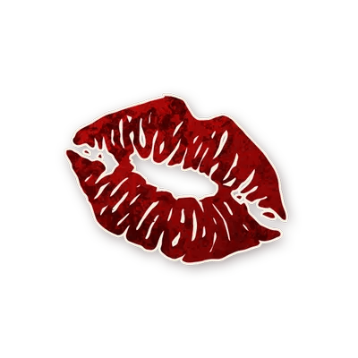
Scarlet Woman
If there are 5 or more players alive & the Demon dies, you become the Demon.
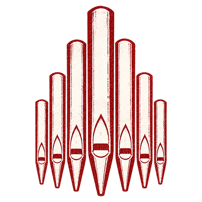
Malicious Organist
If an Outsider dies at night, you learn a Townsfolk character and player. [+1 Outsider]
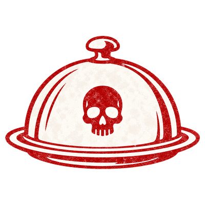
Bad Caterer
Each night, choose a player: they are poisoned until dusk. A chosen Grandmother dies instead, and all players learn that a Bad Caterer is in play.
Godfather
You start knowing which Outsiders are in play. If 1 died today, choose a player tonight: they die. [-1 or +1 Outsider]
Fang Gu
Each night*, choose a player: they die. The 1st Outsider this kills becomes an evil Fang Gu & you die instead. [+1 Outsider]
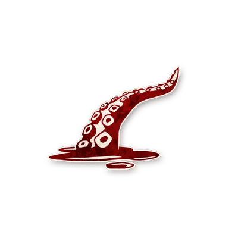
Lleech
Each night*, choose a player: they die. You start by choosing a player: they are poisoned. You die if & only if they are dead.
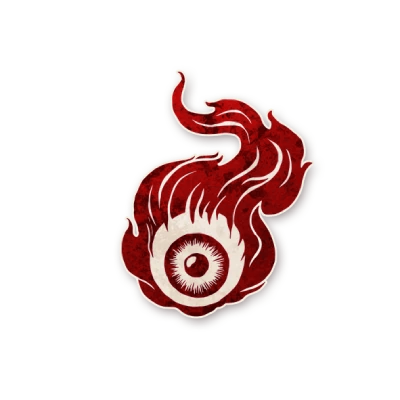
Ojo
Each night*, choose a character: they die. If they are not in play, the Storyteller chooses who dies.
Imp
Each night*, choose a player: they die. If you kill yourself this way, a Minion becomes the Imp.
Wedding Crasher
The Wedding Crasher chooses a player. If they are a Townsfolk, they are drunk. ⏺
Lleech
The Lleech chooses a player. They are poisoned. ⏺
Bad Caterer
The Bad Caterer chooses a player. They are poisoned. ⏺
Godfather
Show the Outsider character tokens in play. ⏺
Maid of Honor
Show an Outsider character token, or show zero. Show a Minion character token, or show zero. ⏺
Chef
Show the number of pairs of evil players. ⏺
Emily, The Bride
The Bride chooses a player. Show the thumbs-up or thumbs-down. ⏺
Oskar, The Groom
The Groom chooses 2 players. Show the thumbs-up or thumbs-down. ⏺
Best Man
The Best Man chooses 2 players. Show the thumbs-up or thumbs-down. ⏺
Grandmother
Show a good character token and point to a player. ⏺
Wedding Crasher
The Wedding Crasher chooses a player. If they are a Townsfolk, they are drunk. ⏺
Bad Caterer
The Bad Caterer chooses a player. They are poisoned. If a Grandmother is chosen, they die instead and all learn a Bad Caterer is in play. ⏺
Scarlet Woman
If the Demon died tonight and 5+ players are alive, the Scarlet Woman becomes the Demon. ⏺
Imp
The Imp chooses a player. That player dies. ⏺
Fang Gu
The Fang Gu chooses a player. ⏺ If they chose an Outsider (once only): replace the Outsider token with the spare Fang Gu token. The Fang Gu dies. Wake the target. Show the YOU ARE and Fang Gu tokens. ⏺
Ojo
The Ojo chooses a character. That character dies, or the Storyteller chooses who dies. ⏺
Lleech
The Lleech chooses a player. That player dies. ⏺
Godfather
If an Outsider died today, the Godfather chooses a player. That player dies. ⏺
Gossip
If the Gossip made a true public statement today, a player dies. ⏺
Weird Uncle
If the Weird Uncle was executed today, one of their Townsfolk neighbors may die. ⏺
Grandmother
Malicious Organist
If an Outsider died tonight, show a Townsfolk character token and point to a player. ⏺
Priest
On the 3rd night only: show 2 Demon character tokens. ⏺
Emily, The Bride
The Bride chooses a player. Show the thumbs-up or thumbs-down. ⏺
Oskar, The Groom
The Groom chooses 2 players. Show the thumbs-up or thumbs-down. ⏺
Best Man
The Best Man chooses 2 players. Show the thumbs-up or thumbs-down. ⏺
Flowergirl
Show the thumbs-up or thumbs-down for whether a Demon voted today. ⏺
Photographer
If the Photographer chose 5 players today, show the number of Outsiders among them. ⏺